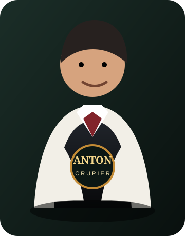

NO LIMIT · 2 A 6 PLAZAS · SIN CONEXIÓN
Texas Hold'em,
Texas Hold'em,
casino de Sala Cero.
Anton dirige la mesa, rota el botón de dealer y reparte cada mano. Compite contra uno, dos, tres, cuatro o cinco rivales con estilos distintos, o pasa el dispositivo entre hasta seis personas.
Máximo 6 jugadoresIA con personalidadFiguras de AntonPartidas guardadas

CRUPIER DE LA CASAANTONCrupier oficial de Anton Casino
A♥
K♠